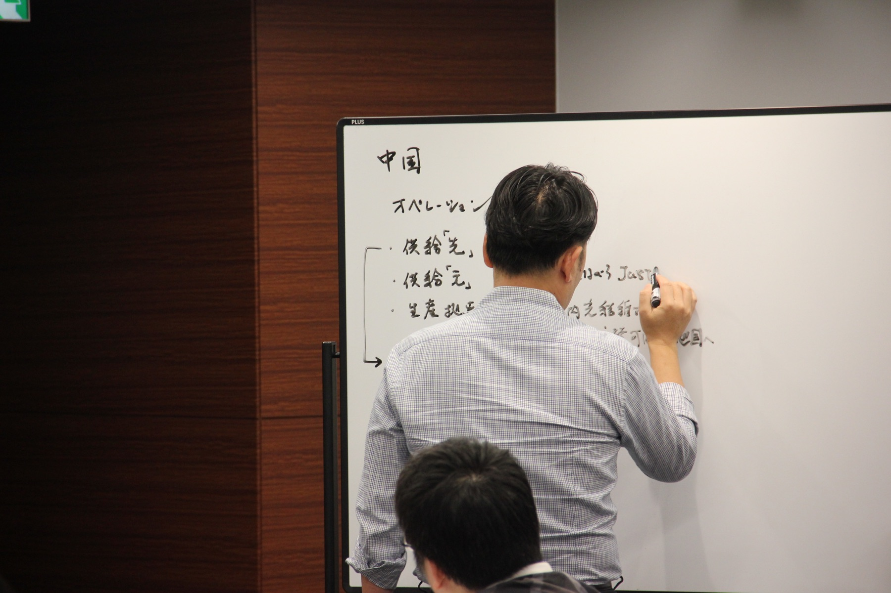
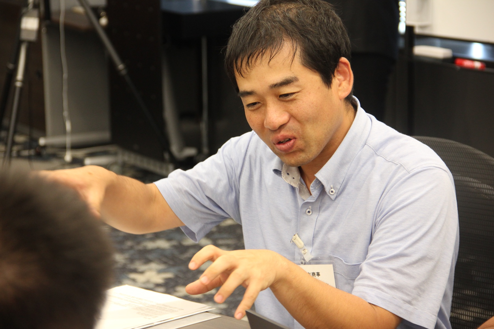
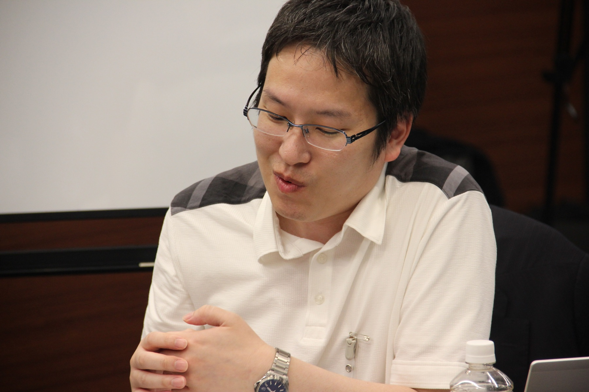
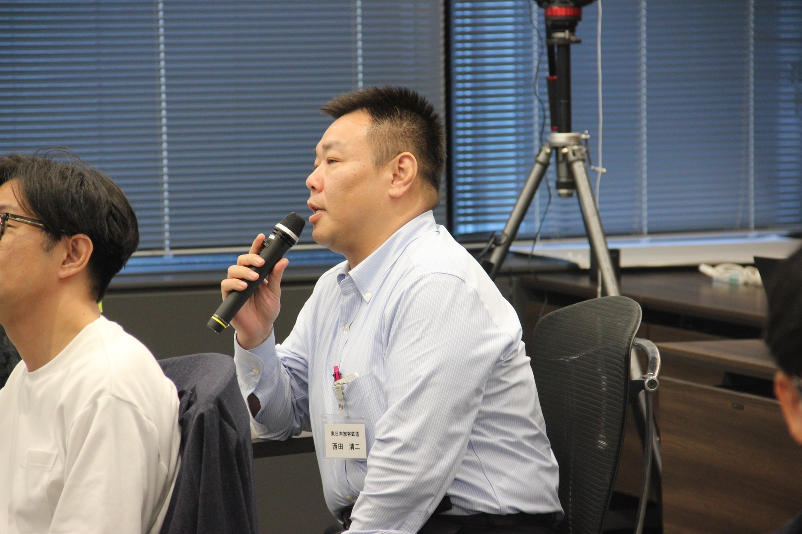
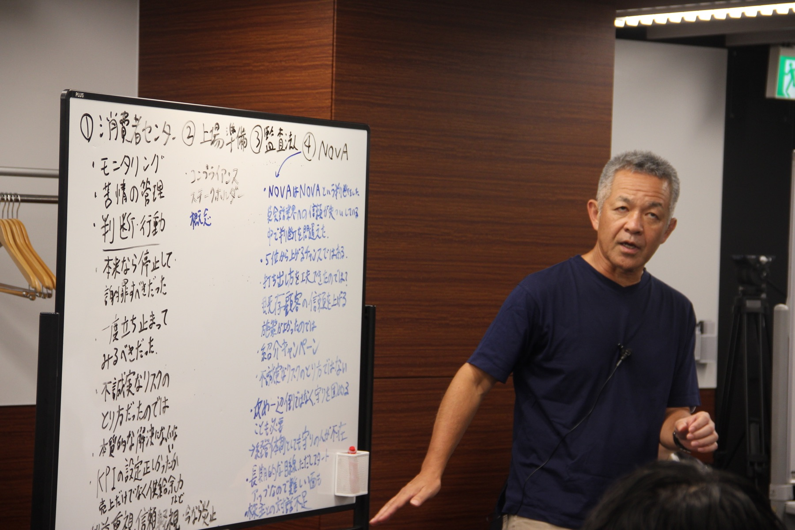

2026年8月6日・7日、JMI EMC第2単位「経営知識のアップデートⅡ」が開催された。扱ったのは、地経学、グローバル戦略、企業の30年史、そして現役経営者との対話。知識を受け取るだけでなく、自社の歴史や現在地に引き寄せ、これから何を選び、何をやめるのかを考える2日間となった。
KEY POINTS
- 地経学とグローバル戦略を通じ、企業を取り巻く環境を複眼的に捉えた
- 自社の30年を振り返り、過去の経営判断から次の意思決定を考えた
- 異業種の参加者との対話が、自社だけでは得にくい視点をもたらした
- 学びを日常の仕事へ持ち帰り、「やめること」と「始めること」を問い直した
世界の変化を、企業の意思決定として考える
初日は、地経学とグローバル戦略を軸に進んだ。地政学的な緊張や経済安全保障は、遠い世界情勢ではない。市場、調達、技術、物流などを通じて、企業の選択に直結する。講義では、企業が持つ「自律性」と「不可欠性」を手がかりに、自社の製品やサービスが国際的な相互依存の中でどのような位置にあるのかを考えた。
重要なのは、知識を増やすことだけではなく、その知識を自社の判断に翻訳することである。何がリスクで、何が強みなのか。どこへの依存を減らし、どの領域で代替の利かない存在を目指すのか。参加者は問いを持ち帰り、対話を通じて考えを深めた。

自社の30年をたどり、経営判断の意味を読み直す
2日目は「企業の30年史」をテーマに、参加者自身が自社の歩みと過去の経営者の戦略を発表した。成功や失敗を並べるのではなく、環境変化の中で、なぜその意思決定がなされたのかを読み解く試みである。異なる会社の歴史を聞くことで、自社では当たり前になっていた前提も相対化されていった。


「これまでニッチな商材の取引に携わり、経営とはかなり遠いところにいました。この2日間で経営のいろはを学びましたが、まだ1％ぐらい。これから京都やスイスでの学び、さまざまなキャリアを持つ皆さんとの交流を通じて、20％、30％、50％へ近づけていきたいです」
原氏の言葉から伝わるのは、短期間で答えを得るのではなく、時間をかけて経営者としての視野を広げようとする姿勢である。自分の現在地を率直に見つめることが、学びを自分ごとにする出発点となる。
「当社は国内を中心に事業を行っているため、グローバルの話はこれまであまりなじみがありませんでした。グローバルな会社の方も参加されているので、その視点が非常に刺激になっています。意識的にそうした観点を持てることが大きいと思います」
異業種の参加者が集う場では、同じ問いにも異なる見え方が生まれる。海外展開の経験が豊富な企業と、国内基盤を磨いてきた企業。その違いが優劣ではなく、互いの視野を広げる材料になることも、EMCの対話の価値である。
学びを、日常の仕事へ持ち帰る
研修の成果は、会場での理解だけでは測れない。自社に戻ったあと、どのような問いを持ち続け、どんな行動を変えるか。西田氏は、前回から残っている言葉を挙げた。

「経営者がやるべきことは、やめることを探すこと。経営者や管理職は、勇気を持ってやめる仕事をつくり、新しい仕事や新しい仕組みにチャレンジする。そのことを普段の仕事でも頭に留めるようにしています」
新しい戦略を掲げるだけでは、組織の時間も人材も生まれない。何をやめるかを決めることは、新しい挑戦に資源を振り向ける経営判断である。研修で得た言葉が日々の仕事の判断軸になり始めていることに、学びの確かな手応えが表れている。
第2単位から見えた、経営者への三つの変化
外部環境を情報として眺めるのではなく、自社の意思決定へ引き寄せる。
自社の歴史を過去の記録ではなく、将来の選択を考える材料として読む。
学びを日常へ持ち帰り、やめることと始めることを具体化する。
地経学、グローバル戦略、企業史、経営者との対話。一見すると異なるテーマは、「不確実な環境の中で、何を根拠に決めるのか」という一つの問いにつながっている。知識が意思決定の言葉へ変わるとき、研修は経営者育成の実践となる。

派遣企業が、研修後に設計したいこと
参加者が持ち帰った問いを、職場でどのように受け止めるかも重要である。上司や経営層との対話の機会をつくる、自社の重要な意思決定を任せる、既存業務をやめる提案を議論する。研修で広がった視野を実務へ接続する場があることで、学びは個人の気づきから組織の変化へ進んでいく。
第2単位に関するFAQ
第2単位では何を学んだのか
地経学、グローバル戦略、企業の30年史、現役経営者との対話を通じて、外部環境と自社の意思決定を結びつけて考えた。
参加者同士の対話には、どのような意味があるのか
業種や職歴の異なる参加者の見方に触れることで、自社の前提を相対化し、新しい判断軸を得る機会となる。
学びを職場で生かすには
研修後の報告だけで終わらせず、何をやめ、何を始めるかを上司や経営層と話し、実際の意思決定を担う機会につなげることが大切である。
知識を、選択へ変える
経営知識は、知っているだけでは組織を動かさない。自社の歴史と現在地を見つめ、異なる視点に触れ、次の選択を自分の言葉で語る。第2単位の2日間は、参加者一人ひとりがその一歩を踏み出す時間となった。EMCの学びは、この先も続いていく。
EDITORIAL NOTE
- 取材対象：JMI EMC第37期 第2単位「経営知識のアップデートⅡ」
- 取材日：2026年8月6日から7日
- 実施主体：一般社団法人日本能率協会 経営・人材革新センター